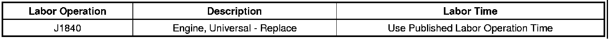

Engine Controls - Misfire, Hard Start, Multiple DTCs
TECHNICALBulletin No.: 09-06-01-006
Date: May 07, 2009
Subject: Check Engine Light On, Engine Misfire, Hard Start, Rough Idle, Hesitation, Loss of Power, Poor Performance, Noise, DTCs P0300, P0301, P0302, P0303, P0304, P0305, P0306, P0307, P0308 Set (Replace Engine)
Models:
2007 Cadillac Escalade, Escalade ESV, Escalade EXT
2007 Chevrolet Avalanche, Silverado, Tahoe
2007 GMC Sierra, Sierra Denali, Yukon, Yukon Denali, Yukon XL, Yukon Denali XL
Equipped with 6.0L or 6.2L V8 Engine RPOs L76, L92, LY6
Please Refer to GMVIS
Condition
Some customers may comment on any of the following engine concerns:
- Check engine light on
- Misfire
- Hard start
- Rough Idle
- Hesitation
- Loss of power
- Poor performance
- Noise
Upon further investigation, technicians may find DTC P0300 (Engine Misfire Detected) set. DTCs P0301-P0308 corresponds to cylinders 1-8. If the ECM is able to determine that a specific cylinder is misfiring, the DTC for that cylinder will also set.
Cause
The above conditions may be caused by a broken intake valve stem at the key groove (keeper).
A small number of intake valves may have been exposed to an overtemp condition during the heat treat process.
Correction
Remove the valve rocker arm cover from the suspect cylinder head and inspect the intake valves. If a broken intake valve stem is found, replace the engine. DO NOT repair the engine.
A thorough diagnosis must be performed on the condition in order to prevent unnecessary engine replacement. Contact the Product Quality Center (PQC) to verify the proper diagnosis has been performed. Please reference this bulletin number when calling. Upon review of the diagnosis, the PQC will authorize an SPO Goodwrench replacement engine.
Caution
When replacing an engine due to internal damage, extreme care should be taken when transferring the intake manifold to the new Goodwrench service engine long block. Internal damage may result in the potential discharge of internal engine component debris in the intake manifold via bent, broken, or missing intake valves. After removing the intake manifold from the engine, the technician should carefully inspect all of the cylinder head intake ports to see if the valve heads are still present and not bent. Usually when the valve heads are missing or sufficiently bent, internal engine component debris will be present to varying degrees in the intake port of the cylinder head. If this debris is present in any of the cylinder head intake ports, the intake manifold should be replaced. This replacement is required due to the complex inlet runner and plenum configuration of most of the intake manifolds, making thorough and complete component cleaning difficult and nearly impossible to verify complete removal of debris. Re-installation of an intake manifold removed from an engine with deposits of internal engine component debris may result in the ingestion of any remaining debris into the new Goodwrench service engine. This may cause damage or potential failure of the new service engine.
Parts Information
Warranty Information

For vehicles repaired under warranty, use the table above.

Disclaimer